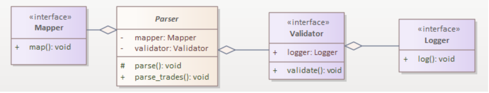
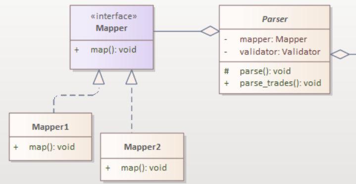
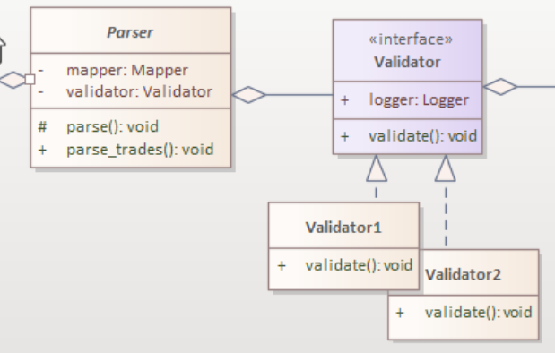
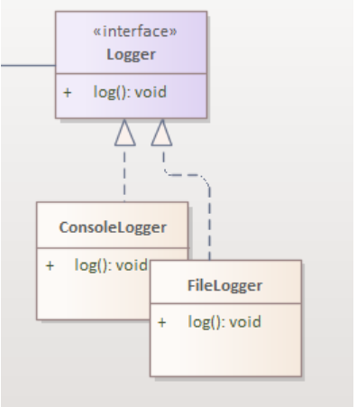
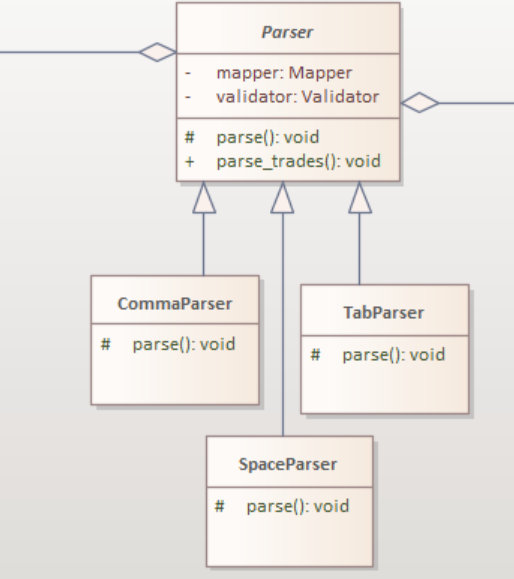
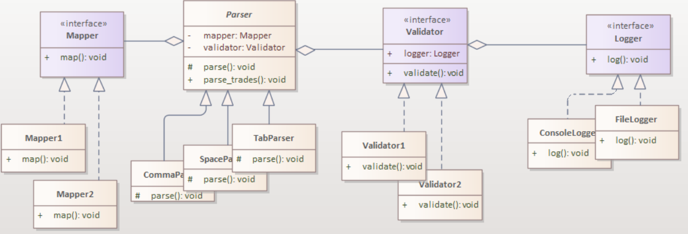
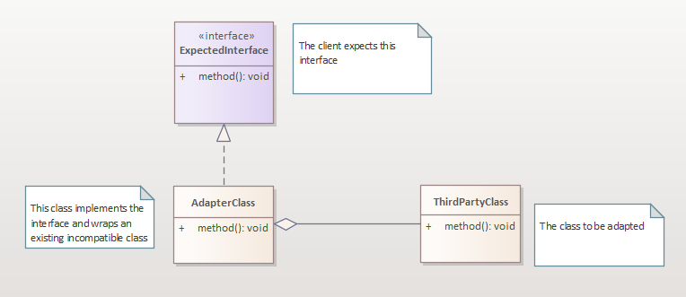

Abstractions
Parser abstraction
1from abc import ABC, abstractmethod
2
3class Parser(ABC):
4 def __init__(self, validator: Validator, mapper: Mapper):
5 self.validator = validator
6 self.mapper = mapper
7
8 def parse_trades(self, trade_data: List[str]):
9 trades: T = []
10 for index, record in enumerate(trade_data):
11 fields = self.parse(record)
12 if not self.validator.validate(fields, index + 1):
13 continue
14 trade = self.mapper.map(fields)
15 trades.append(trade)
16 return trades
17
18 @abstractmethod
19 def parse(self, record: str) -> List[str]:
20 pass
Mapper Abstraction
1class Mapper(ABC):
2 @abstractmethod
3 def map(self, fields: List[str]):
4 pass
Logger Abstraction
1class Logger(ABC):
2 @abstractmethod
3 def log(self, message):
4 pass
Validator Abstraction
1class Validator(ABC):
2 def __init__(self, logger: Logger):
3 self.logger = logger
4
5 @abstractmethod
6 def validate(self, fields: List[str], record_line: int) -> bool:
7 pass
Current Parser UML Diagram
The Mapper abstraction can have many implementations mapping to different objects
The Validator abstraction can also have many implementations
Important
- The Strategy Pattern
Define a family of algorithms, encapsulate each one and make them interchangeable. Strategy lets the algorithm vary independently from the clients that use it.
The Logger abstraction can also have many implementations
The Parser class too can have many different parser implementations
Important
- The Template Pattern
Define the skeleton of an algorithm in an operation, deferring some steps to subclasses. Template Method lets subclasses redefine certain steps of an algorithm without changing the algorithm’s structure.
Here is the overall diagram of all the abstractions and some of their concrete impelmentations.
Examples of Parser classes
CommaParser class
1class CommaParser(Parser):
2 def __init__(self, validator: Validator, mapper: Mapper):
3 Parser.__init__(self, validator, mapper)
4
5 def parse(self, record: str)-> List[str]:
6 return record.split(',')
SpaceParser class
1class SpaceParser(Parser):
2 def __init__(self, validator: Validator, mapper: Mapper):
3 Parser.__init__(self, validator, mapper)
4
5 def parse(self, record: str)-> List[str]:
6 return record.split(' ')
Important
- Dependency Inversion
Dependencies get created before the classes that use them.
Repository Abstraction
1class Repository(ABC):
2 def __init__(self, logger: Logger):
3 self.logger = logger
4
5 @abstractmethod
6 def store_records(records) -> None:
7 pass
Examples of repository implementations
Postgres Repository
1class PostgresRepo(Repository):
2 def __init__(self, logger: Logger, cnn_string: str):
3 self.cnn_string = cnn_string
4 Repository.__init__(self, logger)
5
6 def store_records(self, records: List[TradeRecord]) -> None:
7 engine = create_engine(self.cnn_string)
8 Session = sessionmaker(bind=engine)
9 Base.metadata.create_all(engine)
10 session = Session()
11 for trade in trades:
12 session.add(trade)
13 session.commit()
14 session.close()
15 self.logger.log(f'{len(trades)} records have saved')
TextFile Repository
1class TextFileRepo(Repository):
2 def __init__(self, logger: Logger, filename: str):
3 self.filename = filename
4 Repository.__init__(self, logger)
5
6
7 def store_records(records: List[TradeRecord]) -> None:
8 with open(self.filename, 'a') as f:
9 for record in records:
10 f.write(f'{record}\n')
11 self.logger.log(f'{len(trades)} records have saved')
Reader Abstraction
1class Reader(ABC):
2 @abstractmethod
3 def read_data() -> List[str]:
4 pass
Version 4
1class TradeProcessor:
2 def __init__(self,reader: Reader, parser: Parser, repo: Repository) -> None:
3 self.reader = reader
4 self.parser = parser
5 self.repo = repo
6
7 def process_trades(self):
8 lines = self.reader.read_data()
9 trades = self.parser.parse_trades(lines)
10 self.repo.store_records(trades)
Here is a problem. Mark is using our framework but he is so lazy. His friend Eddy told him about a very nice Validator class that is part of some third party library. Mark would want to use that tested class. But there is a problem, it doesn’t implement the Validator interface and Mark doesn’t have access to it’s source code.
Important
- The Adapter Pattern
Convert the interface of a class into another interface clients expert. Adapter lets classes work together that couldn’t otherwise because of incompatible interfaces.